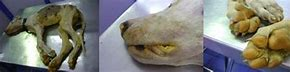

Leptospirosis is a bacterial disease that affects humans and animals.
Causes
Leptospirosis is caused by a bacteria and is usually contracted from contaminated water, so try and prevent your dog from drinking out of any puddles, ponds, lakes, reservoirs or canals. The bacteria mainly comes from the urine of rats, pigs and cattle, which makes farms the most likely place for the disease to be transmitted.
Symptoms

High temperature, loss of appetite, vomiting, lethargy, depression, muscle pain, diarrhoea and blood in the urine. Leptospirosis affects the liver and the kidneys so watch out for excessive drinking and urinating, yellow eyes and persistent vomiting.
If you suspect that your dog has contracted leptospirosis, contact your vet immediately.